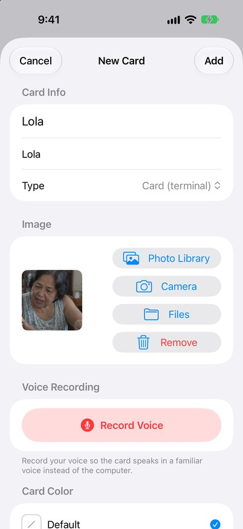
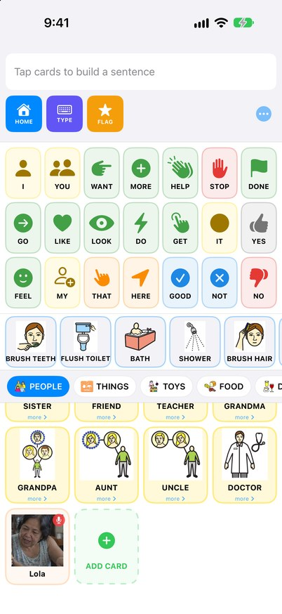

← Tom Taps
Make a card with your own photo and voice
Tom Taps guide 3 for parents and caregivers. Making your own cards is free.
Get Tom Taps on the App Store · Free to start
Make the card
- Open the folder where the card belongs. For Lola, that is People.
- Scroll to the end of the folder and tap Add Card.
- Type the name that shows on the card. The second line is what Tom Taps says out loud. Usually the two are the same.
- Under Image, choose Photo Library, Camera or Files. Use a photo your child knows.

Record your voice
- Under Voice Recording, tap Record Voice and say the word. Tap Stop when you finish.
- Tap Play to check it. If you don’t like it, tap the bin and record again.
- When it sounds right, tap Add.
You can record in any language your family speaks at home, such as Filipino or Bisaya.
Use the card
The new card appears at the end of the folder. The microphone badge shows that it speaks in your voice. Model it like any other word: when Lola visits, tap LOOK, then the Lola card.

The person in the sample photo is AI-generated. Symbols from the Mulberry Symbol Set, CC BY-SA 4.0.